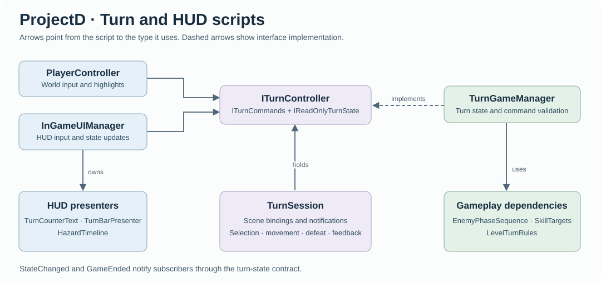

ProjectD script dependencies
Turn and HUD architecture overview

How to read the connections
Each node is a C# file. The left column contains scripts that reference the selected file; the right column contains scripts it references. Hover or focus a neighbor for the resolved types and members. Select it to follow the graph. An event subscription points from the subscriber to the declaration of the event. Runtime notifications travel in the opposite direction.
The graph uses Unity Editor compilation symbols and covers project-owned scripts under Assets/_Project and Assets/Resources, including editor tools and generated input code. Unity/package internals, intra-file references, prefab Inspector wiring, persistent UnityEvents, reflection and string lookups are outside this source graph. For partial classes, member references point to the declaring file and type references use the primary declaration. The execution sequence is in the project flow chart.